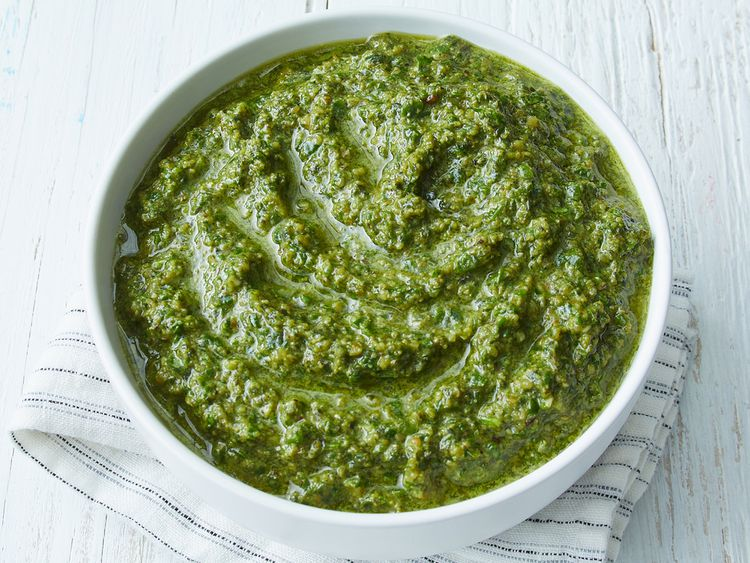

Pesto Sauce

Description
This is a delicious sauce that is typically made with basil leaves, pine nuts, garlic, shredded cheese, olive oil, and seasonings. You can substitute the basil leaves with what you have on hand, such as with spinach, parsley, kale, etc. The pine nuts can be substituted for walnuts. This pesto sauce pairs great with many food items such as pasta, meat, or bread.
Ingredients
- 2 cups of basil leaves, or you can use kale, spinach, or whatever greens you have on hand
- 1 cups walnuts or pine nuts
- 4 cloves of garlic
- 1/4 cup of grated parmesan cheese or dairy-free cheese alternative
- 3/4 cup olive oil
- salt pepper to taste
Steps
- Blend together the basil leaves, nuts, garlic, and cheese in a food processor until finely chopped.
- Pour oil in slowly with the processor running.
- Season with salt and pepper.
- Use your pesto sauce immediately or store the rest of your pesto sauce in the next step.
- Put pesto sauce in an airtight container and pour a layer of olive oil on top; this keeps the pesto sauce from browning. The pesto sauce will last for about a week or two in the fridge.